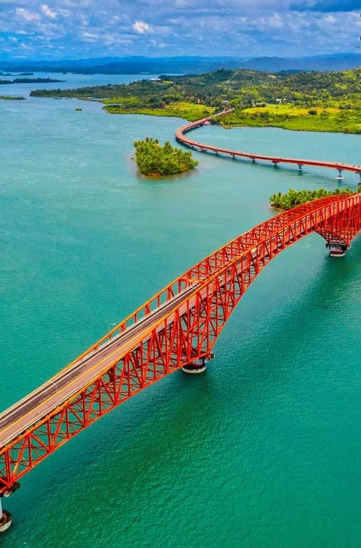

Region 8, also known as Eastern Visayas, is a region located in the eastern part of the Visayas island group in the Philippines. It is composed of six provinces: Biliran, Eastern Samar, Leyte, Northern Samar, Samar, and Southern Leyte. Eastern Visayas is known for its natural beauty, historical significance, cultural heritage, and resilient communities.
Biliran is a small province known for its picturesque landscapes and natural attractions. It offers stunning waterfalls, hot springs, and beautiful beaches. Biliran is also home to the majestic Mount Tres Marias, which is a popular hiking destination for adventure enthusiasts.
Eastern Samar is a province known for its pristine beaches, rugged coastlines, and diverse marine ecosystems. It offers opportunities for beach hopping, snorkeling, and diving. Eastern Samar is also known for its vibrant festivals, such as the Sulat Bay Festival and Balangiga Town Fiesta.
Leyte is a province with significant historical and cultural importance. It is known for the historic Battle of Leyte Gulf, one of the largest naval battles in history during World War II. Leyte is also home to the iconic MacArthur Landing Memorial Park in Palo, which commemorates General Douglas MacArthur's return to the Philippines. The province offers beautiful beaches, diving sites, and the captivating Lake Danao.
Northern Samar is a province known for its untouched natural beauty and ecological diversity. It offers pristine beaches, stunning waterfalls, and lush forests. Northern Samar is also home to the rock formations of Biri Island, a popular destination for landscape photographers and nature lovers.
Samar is the largest province in Eastern Visayas and is known for its rugged terrains, scenic landscapes, and diverse outdoor activities. It offers opportunities for spelunking, trekking, and river cruising. Samar is also known for its cultural heritage, including the historic Church of Basey and the colorful Pintados-Kasadyaan Festival.
Southern Leyte is a province known for its ecotourism sites and marine biodiversity. It offers opportunities for diving, snorkeling, and whale shark encounters in the municipality of Padre Burgos. Southern Leyte is also home to the stunning Maasin Cathedral and the scenic Canigao Island.
Eastern Visayas is a region that showcases the natural wonders, historical significance, and vibrant culture of the Visayas. Its pristine beaches, lush mountains, and warm communities provide a unique experience for travelers seeking both adventure and cultural immersion. Whether it's exploring historical landmarks, engaging in outdoor activities, or simply relaxing on the beaches, Eastern Visayas offers a diverse range of attractions for visitors to enjoy.